Mətbuat və onlayn xəbər materialları
11 resurs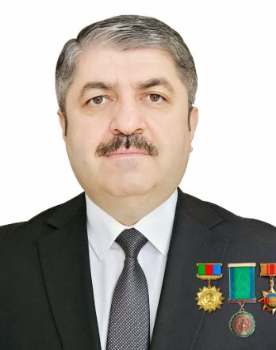
Məqaləedebiyyatveincesenet.az
Qurani-Kərimdə «Azərbaycan» sözünün və Bakı neftinin yer aldığını elmi əsaslarla sübut edən Seymur Nəsirov barədə
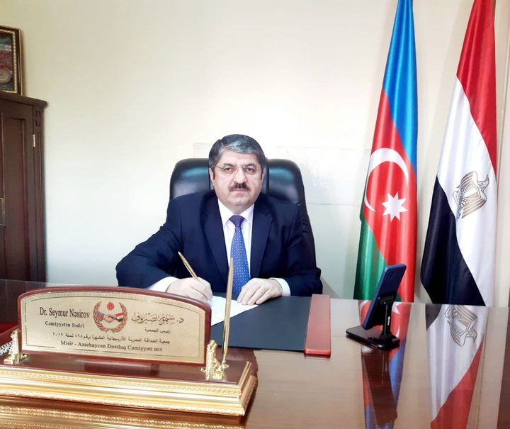
Məqaləazertag.az
Ərəb mediasında 20 Yanvar faciəsi haqqında məqalə dərc olunub
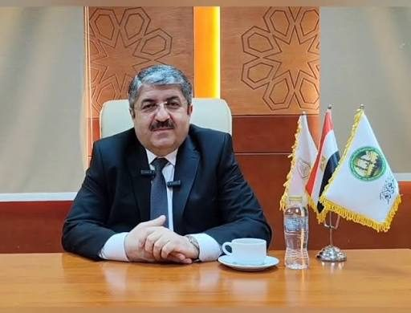
Məqaləsabaha-inamla.az
Ərəb mediasında azərbaycanlı alimin 20 Yanvar faciəsi haqqında məqaləsi dərc olunub
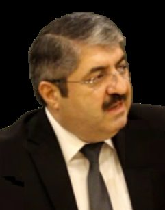
Məqaləazertag.az
Misir mediası azərbaycanlı alimin simpoziumda çıxışını geniş işıqlandırıb
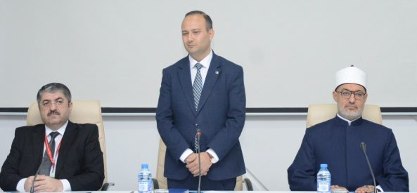
Məqaləazertag.az
Azərbaycan İlahiyyat İnstitutunun Misirin əl-Əzhər Universiteti ilə əməkdaşlıq etməsinə dair fikir mübadiləsi aparılıb
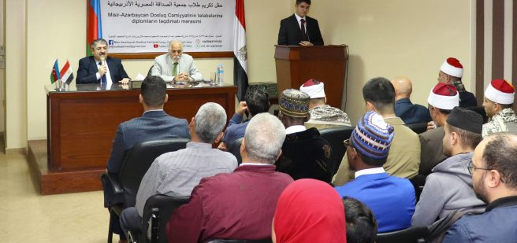
Məqaləazertag.az
Misir-Azərbaycan Dostluq Cəmiyyətində tələbələrə diplomlar təqdim edilib
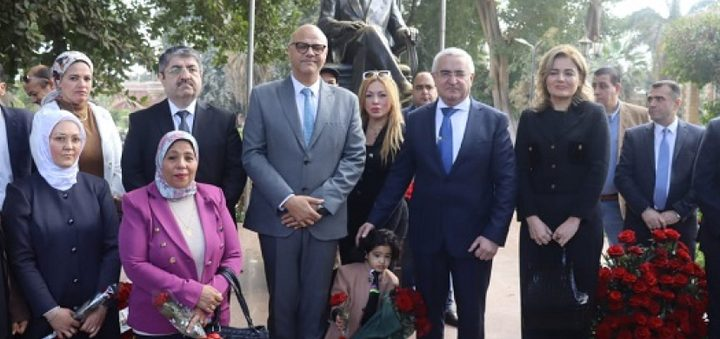
Məqaləazertag.az
Misirdə Ümummilli Lider Heydər Əliyevin xatirəsi anılıb
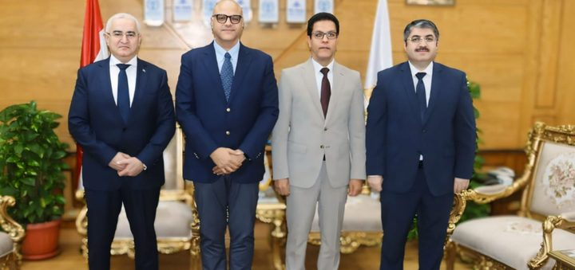
Məqaləazertag.az
Misirin Bənhə Universitetində Azərbaycan dili bölməsinin açılması müzakirə edilib
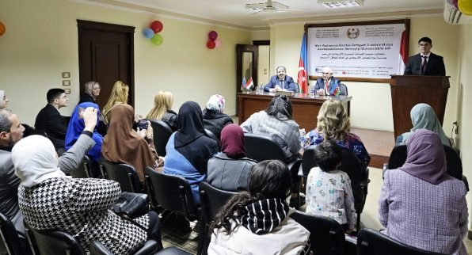
Məqaləazertag.az
Misirdə Dünya Azərbaycanlılarının Həmrəyliyi Günü qeyd olunub
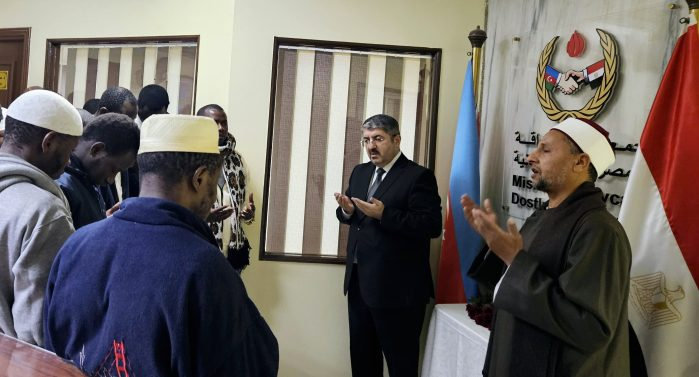
Məqaləazertag.az
Misir-Azərbaycan Dostluq Cəmiyyətində xatirə guşəsi yaradılıb
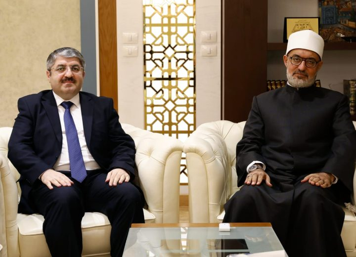
Məqalədiaspor.gov.az